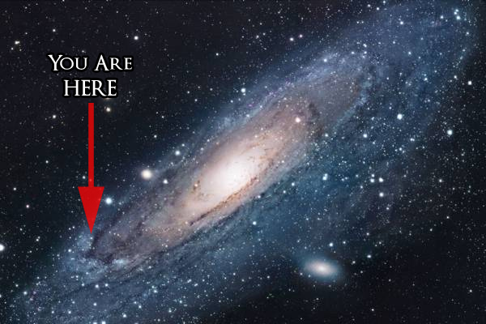
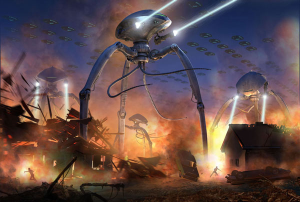

Theories - Group 2
The second group discusses the idea that intelligent life exists but there’s a reason why we haven’t seen them yet. There are many theories that fall under this group, but we don't have time to cover them all, so here's 9 of the most popular and most probably solutions to the Fermi Paradox.

Humans with the ability to think and communicate like modern humans have only been around for about 50,000 years and recorded history only 5,000.
So if alien have visited us a long time ago, we would have no way of knowing.
Perhaps our ancestors have been visited by aliens but there was no way of us knowing because recorded history did not exist.
Similar to how someone who've lived on an island their whole life wouldn’t know that there are other people out there (if they can't communicate with the world beyond the island),
we might just be lving in an isolated area of the universe. After all, we live near the edge of the milky way. So for all we know,
the center of the universe could be teeming with life and that no on cares about the random part of the spiral where we live.

It could be that there are hostile species out there that will attack and destroy any civilizations it comes in contact with,
and most intelligent life out there are hiding from the predators. If this is the case then the very existence of humans would in danger.
Perhapes aliens are not as friendly and as curious as we might think. They behave much like humans do what humans have done to each other
when a more-advanced civilization has encountered a lesser one: enslavement, or eradicatiion.
(much like what the europeans did to the native americans).

The super predator theory suggest that there might be a civilization that is far ahead of all other civilizations and destroys any civilization once they acheive a certain level of technology or intelligence. This might explain why the universe is so silent- Everyone else has been killed off by the super predator. As for the reason why a civilization would want to eliminate all other civilizations remains uncertain.

It could be that we have been receiving message from other civilizations but our technology is too far behind to receive their messages.
Think about technology from 100 years ago. The gap between technology today and technology 100 years ago is immense!
It's like trying to send someone a text message when they only have a typewriter, it's obvious that the person with the typewriter have no way of
receiving your text message! Now imagine aliens with technology that is at least a few thousand, if not a few million, years ahead of us.
We would have no way of receiving their messages, and no way of knowing their existence.
Or perhaps they used communication tools that work differently from ours. As of now, we were assuming that aliens use the same/similar means of
communication as us. However, this may not be the case since they've developed under conditions that may be different from ours.

This is a common theory that most people believe, but the theory is unable to be supported by scientific evidence.
It is also quite illogical as for why the government might do so.

This theory suggest that earth is like a galactic zoo and high intelligence civilizations are observing us.
Aliens might want to study us for the same reason why we study the behaviours of other animals who are not
as advanced as us.
It might be that high intelligent species group together and create laws and policies that forbid
high intelligent civilizations to come in contact with unintelligent or undeveloped civilizations in order for natural evolution
to take its course. The developing civilizations will be protected and monitored until it’s deemed intelligent or advance enough
to join the high intelligent civilizations.
The problem with this theory is that it can’t be tested and the fact that if only one of those developed civilizations broke the rule,
the whole thing would be revealed.

Imagine you coming across an anthill.
Do you stop and observe them? Do you try to help them? Or do you become hostile and start destroying the anthill?
The most likely answer is neither, you would simply ignore them and continue on with your day, and especially when you have another goal in mind.
This might be the case for super high intelligent civilizations. To them, we might be as insignificant as a bug, something that isn’t even worth their time.

Maybe reality isn't real.
Think about, what are the chances that we are the only intelligent civilization in the entire universe?
It seems more likely that we live in a simulated reality than a real one.
If high intelligent civilizations have had millions and billions of years to develop,
assuming that technological advancement is unlimited, then that would mean that an advanced civilization
would have enough computer power to simulated an entire universe and possibly human consciousness as well.
This would mean that it might be easy for a highly advanced civilization to simulated multiple universes at a time,
meaning that the chances of our universe being one of simulated ones is incredibly high.